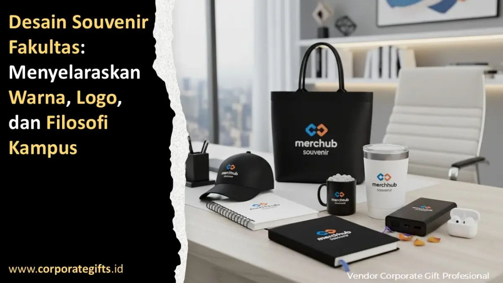

Corporate Gifts ID - Desain souvenir fakultas adalah proses merancang merchandise resmi fakultas dengan menyelaraskan warna khas program studi, penempatan logo yang presisi, dan filosofi kampus dalam satu produk. Hasilnya adalah souvenir yang langsung dikenali sebagai representasi reputasi fakultas oleh dosen tamu, mitra institusi, dan alumni. Corporate Gifts ID menyediakan produk custom seperti plakat kristal, tumbler, totebag, dan agenda kulit yang dapat disesuaikan dengan identitas visual setiap fakultas.
Cinderamata akademik tidak boleh sekadar diproduksi secara massal tanpa arah konsep yang jelas. Setiap produk yang diserahkan dalam seremoni yudisium, penandatanganan MoU, atau seminar internasional membawa beban martabat keilmuan yang mewakili standar tata kelola universitas.
Poin Kunci Desain Souvenir Fakultas:
- Konsistensi Palet Warna: Menyelaraskan warna produk dengan panduan identitas visual resmi program studi agar mudah dikenali seketika.
- Proporsi & Teknik Cetak Logo: Menggunakan metode cetak awet seperti laser engraving dan emboss tanpa mengubah rasio aspek lambang institusi.
- Translasi Nilai Filosofis: Menerjemahkan visi keilmuan dan semboyan kampus lewat seleksi material berbobot, ramah lingkungan, atau bernilai monumental.
- Instrumen Diplomasi Akademik: Souvenir fakultas membentuk persepsi profesionalitas dan tata kelola perguruan tinggi di mata mitra institusional.
- Efisiensi Pengadaan Acara: Memilih lini produk terstandar mempercepat proses pengadaan tender (procurement) untuk konferensi, yudisium, dan MoU.
Kenapa Desain Souvenir Fakultas Menentukan Citra Kampus?
Setiap detail visual souvenir mengirimkan pesan langsung tentang budaya mutu dan kredibilitas lembaga pendidikan tinggi. Ketika seorang dosen tamu dari universitas luar negeri atau pimpinan perusahaan mitra menerima cinderamata yang dirancang apik, mereka secara spontan menyimpulkan bahwa fakultas tersebut dikelola dengan standar profesionalisme yang tinggi.
Konsistensi visual yang terjaga baik antara lambang universitas, warna panji fakultas, dan mutu fisik produk memperkuat daya ingat merek (brand recognition) dalam jangka panjang. Sebaliknya, cinderamata yang dibuat asal-asalan dengan logo buram atau warna meleset dapat mereduksi impresi positif almamater.
Bagaimana Filosofi Warna Membentuk Identitas Fakultas?
Dalam tradisi akademik di Indonesia dan dunia, setiap rumpun ilmu memiliki asosiasi warna khas yang sarat makna simbolik. Memilih palet warna yang akurat bukan sekadar preferensi estetika, melainkan penegasan identitas rumpun keilmuan:
- Biru: Sering diasosiasikan dengan fakultas teknik, matematika, dan ilmu komputer, melambangkan stabilitas, rasionalitas, dan kedalaman logika berpikir.
- Hijau: Identik dengan fakultas kedokteran, pertanian, dan kehutanan, merepresentasikan kehidupan, pertumbuhan, keberlanjutan, dan pengabdian.
- Merah Marun: Umum digunakan oleh fakultas hukum, ilmu sosial, dan ilmu politik, memancarkan wibawa, ketegasan konstitusional, dan dinamisme.
- Kuning / Jingga: Simbol tradisi keilmuan ekonomi, bisnis, dan humaniora, memancarkan optimisme, kecerdasan analitis, dan keterbukaan.
Kunci utama terletak pada standardisasi kode warna. Tim pengadaan fakultas sebaiknya selalu menyertakan kode warna Pantone, CMYK, atau HEX resmi kepada vendor untuk mengantisipasi perbedaan saturasi pada berbagai jenis material seperti logam, kain kanvas, kulit, dan kristal.
Tabel Makna Warna dan Rekomendasi Produk Souvenir
Berikut rangkuman psikologi warna akademik dan contoh kombinasi produk cinderamata kampus:
| Warna Fakultas | Kesan Psikologis & Keilmuan | Rekomendasi Produk Corporate Gifts |
|---|---|---|
| Biru Tua / Navy | Intelektual, stabil, terpercaya | Tumbler stainless custom logo, agenda kulit pu |
| Hijau Emerald | Berkelanjutan, pertumbuhan, pengabdian | Totebag kanvas organik, tumbler eco-friendly bambu |
| Merah Marun | Berani, berwibawa, klasik institusional | Plakat kristal optik K9, gift set eksekutif leather |
| Abu-abu / Silver | Modern, elegan, presisi ilmiah | Smart vacuum mug, agenda binder metal elegan |
| Emas / Gold | Prestisius, keunggulan, penghargaan kehormatan | Plakat kristal laser 3D, gift set VIP penandatanganan MoU |
Prinsip Menempatkan Logo Fakultas dengan Presisi
Lambang universitas dan lambang fakultas memiliki nilai sakral. Penempatannya pada merchandise harus mematuhi kaidah tata letak yang proporsional:
- Jaga Clear Space (Ruang Kosong): Berikan jarak aman di sekitar logo agar tidak bertabrakan dengan garis jahitan boks atau tepi produk.
- Dilarang Mendistorsi Rasio: Hindari peregangan (stretching) horizontal maupun vertikal yang mengubah bentuk asli lambang institusi.
- Gunakan Format Vektor Master: File grafis wajib berupa format vektor (AI, EPS, CDR, atau PDF beresolusi tinggi) agar teks moto universitas tetap tajam saat dicetak dalam ukuran mikro.

Koleksi merchandise fakultas elegan mulai dari plakat kristal, agenda kulit pu, dan smart tumbler.
Teknik Cetak Unggulan untuk Detail Logo Akademik
Setiap material membutuhkan metode cetak khusus agar lambang fakultas terpancar anggun dan tahan terhadap pemakaian harian:
- Laser Engraving Serat Optik: Sangat ideal untuk permukaan logam pada tumbler atau pulpen. Hasil ukiran permanen monokrom tidak akan terkelupas meski dicuci berulang kali.
- Blind Deboss / Hot Foil Stamping: Memberikan efek cekung ke dalam pada sampul agenda kulit. Penggunaan foil emas atau perak menambahkan aksen mewah pada acara resmi senat akademik.
- Sub-Surface Laser Crystal 3D: Mengukir lambang kampus di bagian dalam blok kristal tanpa meraba tekstur permukaan luar kaca, menciptakan ilusi tiga dimensi yang memukau.
- Print UV Full Color Resolusi Tinggi: Solusi tepat untuk mereproduksi lambang universitas yang memiliki gradasi warna rumit pada media datar.
Menerjemahkan Filosofi Kampus ke Karakter Material
Filosofi kampus tidak hanya tercermin dari semboyan berbahasa Latin atau Sansekerta yang dicetak, melainkan hadir melalui karakter fisik bahan yang dipilih:
Fakultas yang berkomitmen terhadap isu transisi hijau dan keberlanjutan global sangat tepat memilih bahan kanvas katun organik, sedotan stainless, dan buku catatan berbahan kertas daur ulang. Sebaliknya, fakultas kedokteran atau pascasarjana yang mengedepankan presisi tinggi dan integritas dapat memilih gift set kombinasi logam kuningan dan kulit sintetis berkualitas.
5 Langkah Menyelaraskan Warna, Logo, dan Filosofi
Agar pengadaan cinderamata fakultas berjalan terarah dan bebas dari revisi berulang, ikuti lima alur kerja berikut:
- Siapkan Dokumen Brand Guideline Resmi: Kumpulkan file vektor master logo universitas, logo prodi, serta bagan palet warna standar.
- Petakan Audiens Penerima Cinderamata: Pisahkan kebutuhan cinderamata formal untuk narasumber kuliah pakar dari perlengkapan seminar umum mahasiswa.
- Pilih Produk yang Merefleksikan Nilai Akademik: Prioritaskan barang yang mendukung aktivitas intelektual seperti instrumen menulis, buku riset, atau plakat kehormatan.
- Tentukan Teknik Cetak yang Sesuai dengan Substrat: Pastikan metode pencetakan selaras dengan bahan dasar produk yang dipesan.
- Validasi Mockup Digital dan Proofing Fisik: Mintalah proof cetak contoh dari vendor untuk memastikan kesesuaian letak logo dan akurasi saturasi warna sebelum produksi massal.
Produk Souvenir Pilihan untuk Berbagai Acara Akademik
Katalog Corporate Gifts ID menyediakan aneka pilihan produk yang siap dikustomisasi sesuai identitas fakultas Anda:
- Plakat Kristal Optik: Cinderamata paling prestisius untuk penghargaan dosen purnatugas, pembicara seminar internasional, dan tamu kehormatan.
- Tumbler Stainless Suhu Vakum: Pilihan fungsional untuk seminar kit, kuliah tamu, dan bingkisan mahasiswa baru.
- Totebag Kanvas Tebal: Tas serbaguna untuk wadah berkas konferensi akademik skala besar.
- Buku Agenda Kulit PU: Media catatan elegan untuk pimpinan dekanat dan pejabat universitas.
- Smart Vacuum Mug: Merchandise meja kerja modern untuk tenaga pengajar dan staf kependidikan.
Pertanyaan Seputar Desain Souvenir Fakultas (FAQ)
Kesimpulan: Bangun Reputasi Akademik Lewat Cinderamata Bermakna
Desain souvenir fakultas yang memadukan keaslian warna, ketepatan logo, dan filosofi keilmuan merupakan investasi strategis dalam membangun reputasi akademik kampus. Cinderamata yang diproduksi dengan presisi tinggi akan menjadi representasi abadi atas kemajuan ilmu pengetahuan dan kehormatan universitas Anda.
Konsultasikan rancangan merchandise dan gift set fakultas Anda bersama tim ahli Corporate Gifts ID. Kami siap menyediakan layanan desain visual mockup gratis, pilihan material terbaik, dan jaminan ketepatan waktu pengadaan untuk seluruh perguruan tinggi di Indonesia.